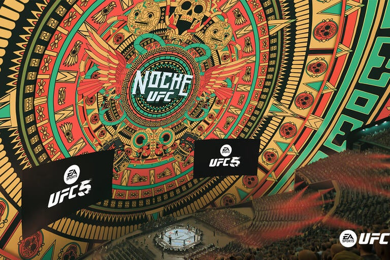

Welcome to IFL
The fastest growing MMA league.
Latest News

Первый турнир на Мексике?
IFL 38 будет в стиле "noche"
Read full news
4 марта пройдет турнир IFL 38 в стиле "Noche". Этот турнир приурочен к Дню независимости Мексики. Стоит отметить, что это первый турнир в истории IFL, который пройдет в Мексике
Latest News

Коди Гарбрант оставил свой пояс?
Чемпион наилегчайшего веса Коди Гарбрант оставил свой пояс
Read full news
«На турнире IFL 36 Коди Гарбрандт защитил свой титул в бою против Манеля Капе. Однако он решил освободить пояс и перейти в легчайший вес. Почему непобежденный боец принял такое решение? Напомним, он является одним из рекордсменов в истории IFL. Коди стал чемпионом с рекордом 2-0-0. Как вы думаете, сложится ли у Коди карьера в легчайшем весе?»